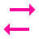

Keep, refresh, consolidate or move: every workload gets a reasoned placement, with the tradeoffs written down.Keep, refresh, consolidate or move: every workload gets a reasoned placement, with the tradeoffs written down.
Plan changes around application requirements, operating needs and the investments you already have.
What your team gets back
One team that knows your setup
From desktops to infrastructure, one dedicated team takes care of the whole picture.
Fewer surprises, fewer disruptions
We spot issues early, fix them before they grow and make sure changes work before they go live.
A team that remembers
Your systems, your history and your documentation stay in good hands. No starting from scratch or relying on one person.
Modernization services
Strategy, build, migration and recovery for the infrastructure behind your applications, data and shared IT services.
Infrastructure strategy
and workload placement
 Compare retaining or refreshing infrastructure, adopting cloud services, consolidating workloads and moving between environments.
Compare retaining or refreshing infrastructure, adopting cloud services, consolidating workloads and moving between environments.- Evaluate application dependencies, performance, data access, recovery objectives and operating requirements.
- Document placement recommendations, costs, assumptions and technical tradeoffs.

Data center refresh
and capacity planning
- Design and deploy servers, storage, networking and virtualization, including traditional and hyperconverged infrastructure.
- Size for workload demand, storage capacity and performance, growth, maintenance and agreed failure scenarios.
- Plan hardware refreshes, consolidation, expansion and platform upgrades.
Cloud configuration
and hybrid connectivity
- Configure agreed cloud resources and connections to existing systems.
- Establish resource organization, routing, name resolution, identity integration, access controls and monitoring.
- Map application dependencies and responsibilities for customer-managed systems and provider-managed services.

Workload migration and
platform transitions
- Plan and execute workload moves around application and data dependencies.
- Define prerequisites, sequencing, pilots, data movement, production cutover and rollback or recovery.
- Validate transitions with application owners against agreed requirements.
Availability,
backup and recovery
- Design protection and recovery around agreed availability, recovery-time and data-loss objectives.
- Plan backup architecture, replication, offsite protection, recovery sequencing and documented procedures.
- Where testing is included, record restore points, recovered services, elapsed recovery time and unmet acceptance criteria.
Operational
integration and handoff
- Establish configuration records, monitoring arrangements, maintenance procedures and operational ownership.
- Coordinate technical validation, application-owner acceptance and administrator knowledge transfer.
- Transition to your team or an agreed support arrangement.
On-premises, cloud and what they share
On-premises infrastructure
- Servers
- Storage
- Networking
- Virtualization
- Hyperconverged infrastructure
Environment
Cloud services
- Compute
- Platform services
- Resource groups
- Access controls
Environment
Workloads and connectivity
- Business apps
- Data
- Shared IT services
- Routing
- DNS
Connections
Identity, monitoring and recovery
- Identity
- Monitoring
- Backup
- Replication
- Offsite copies
- Recovery
Shared dependencies
From day one
to day-to-day
No complicated handovers. No guessing who’s doing what. Just good people keeping your technology in good shape.
01First, let’s talk.
We get to know your business, understand what you need and agree on who’s doing what. No surprises later.
02We’ll get to know the ropes.
We get familiar with your systems, document the important stuff and make sure nothing gets lost in translation.
03Leave the day-to-day to us.
Monitoring, maintenance, support. We’ve got the everyday covered, so you can get on with yours.
04Good is good. Better is better.
We don’t just keep things ticking. We check in, spot opportunities and find ways to make things work even harder for you.

 A dedicated engineering team
A dedicated engineering team
 Current infrastructure
Current infrastructure